백남준아트센터
언어
로그인
검색
사이트맵
언어
안내
전시와 프로그램
소장품과 아카이브
배움
scroll
안내
전시와 프로그램
소장품과 아카이브
배움
로그인
검색
사이트맵
언어
아트센터 소개
연구
작가
관련소식
패밀리사이트
보도자료
백남준아트센터
레오나르도만큼 정확하게
피카소만큼 자유롭게
르누아르만큼 다채롭게
몬드리안만큼 심오하게
폴록만큼 난폭하게
재스퍼 존스만큼 서정적으로
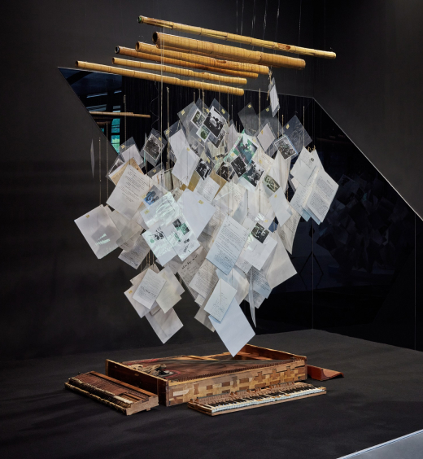
전시
사과 씨앗 같은 것
2023. 4. 27.—2024. 2. 12.
백남준, 마리 바우어마이스터, 만프레드 레베, 만프레드 몬트베, 알도 탐벨리니, 앨런 캐프로, 오토 피네, 저드 얄커트, 제임스 시라이트, 토마스 태들록
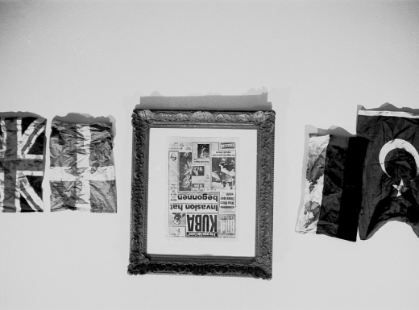
소장품
＜아름다운 여성 화가의 연대기＞, ≪음악의 전시 — 전자 텔레비전≫, 갤러리 파르나스, 부퍼탈
작가 | 만프레드 몬트베(1963)
앨리슨 놀즈를 위한 스코어로 매월 세계 각국의 국기 한 개씩을...
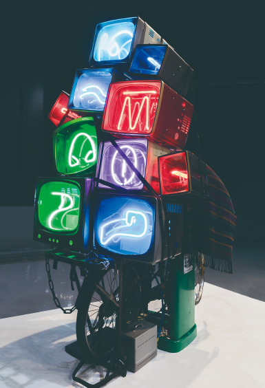
소장품
칭기즈 칸의 복권
작가 | 백남준(1993)
동양과 서양을 잇는 실크로드가 광대역 전자 고속도로로 대체된 것을 형상화한 작품으로 1993년 베니스 비엔날레 독일관에 전시되었다.
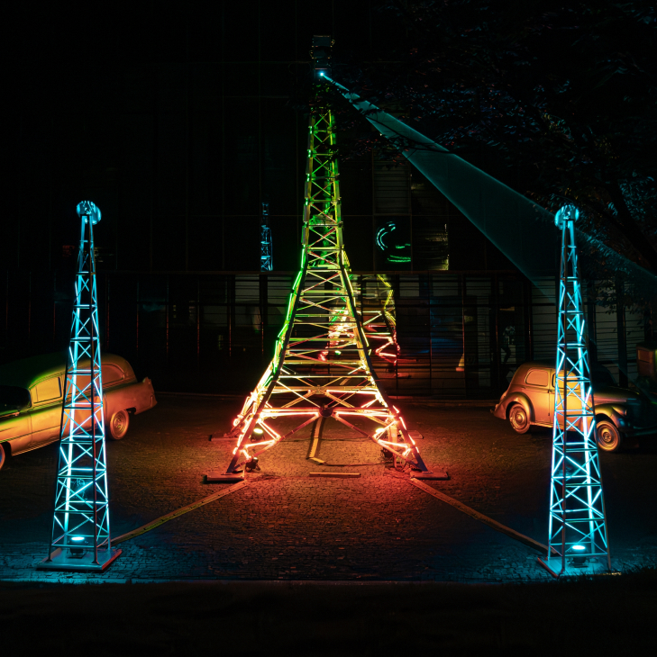
전시
트랜스미션:너에게 닿기를
2023. 8. 31.—2023. 12. 3.
* 야외 레이저 17:00-20:00
장소 | 백남준아트센터 야외, 제2전시실
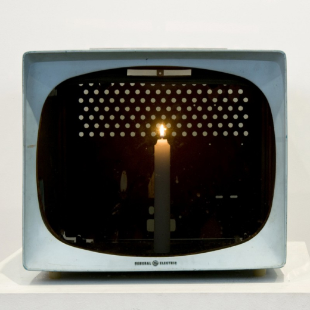
소장품
촛불 TV
작가 | 백남준(1975)
구형 TV 케이스 안에 초 하나가 불을 밝히고 있다.
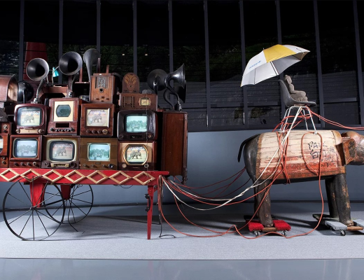
소장품
코끼리 수레
작가 | 백남준(2001)
나무로 제작된 거대한 앤티크 코끼리 조각상과 의자 위에 우산을 쓰고 있는 불상, 후면부의 붉은색 수레 위에 놓인 앤티크 텔레비전과 라디오, 나팔 모양 확성기 등으로 구성된 작품이다.
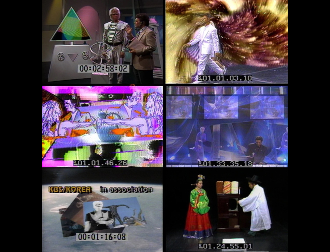
프로젝트
NJP x KF 세계와 손잡고
2022. 11. 1.—
백남준 탄생 90주년 한국국제교류재단 협력 프로젝트
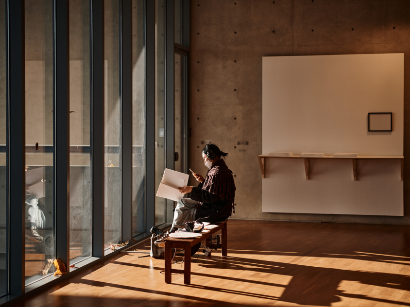
전시
랜덤 액세스 프로젝트 3.0 오로민경: 빛을 전하는 시간
2023. 9. 19.—2023. 12. 3.
오로민경
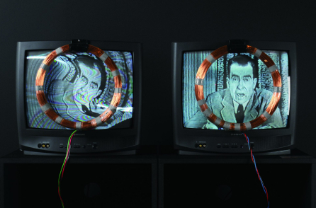
소장품
닉슨
작가 | 백남준(1965)
백남준의 초기 실험 텔레비전 중 하나
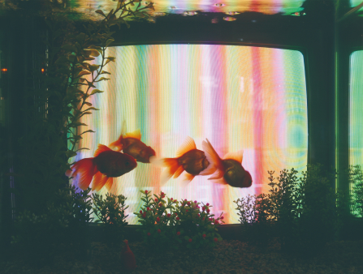
소장품
TV 물고기(비디오 물고기)
작가 | 백남준(1975)
일렬로 늘어선 24개의 어항 뒤에 24대의 텔레비전 모니터가 놓여 있다.
백남준 아카이브 바로가기
비디오 아카이브 바로가기
NJP 배움
더보기 >
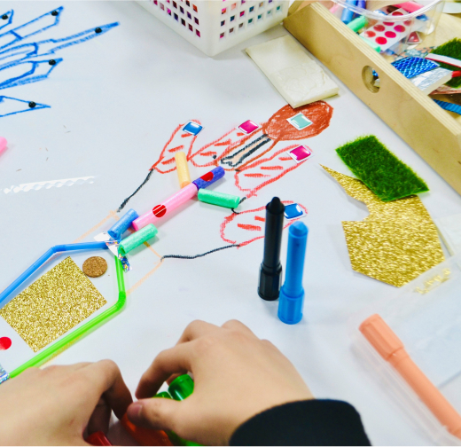
[NJP학교] 옹기종기 모아보면
2023. 9. 12.—2023. 11. 30.
초등 저학년 30명 이하 학급 단체 및 장애학생 5~10명 이내 대상
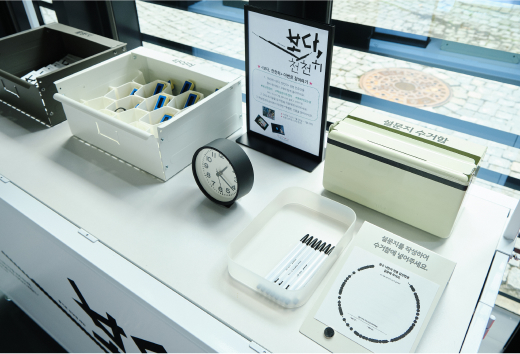
[문화가 있는 날] 즐거운 감상법 제안 ＜보다, 천천히＞
2023. 9. 27.—2023. 10. 3.
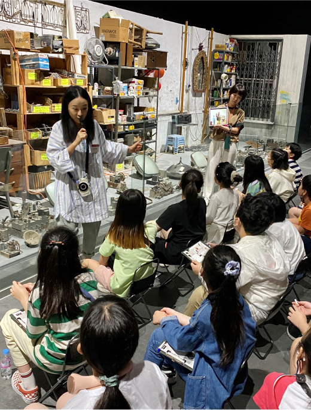
[NJP아카데미] 백남준의 작업실 탐방
2023. 9. 12.—2023. 11. 30.
초등학생 대상